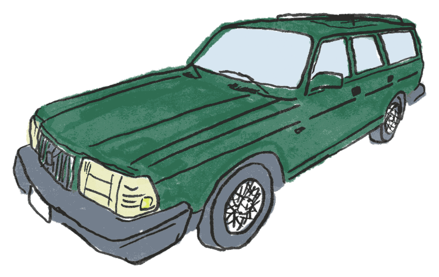

240 CLASSICLIMITED EDITION
NO. 80/1600
NO. 80/1600
no tach
Fuel gauge dead. Running off the trip meter.

Wilma
1993 Volvo 240 Classic wagon, dark green. A Florida car, here since September 1, 2026.
Fuel gauge dead. Running off the trip meter.

1993 Volvo 240 Classic wagon, dark green. A Florida car, here since September 1, 2026.